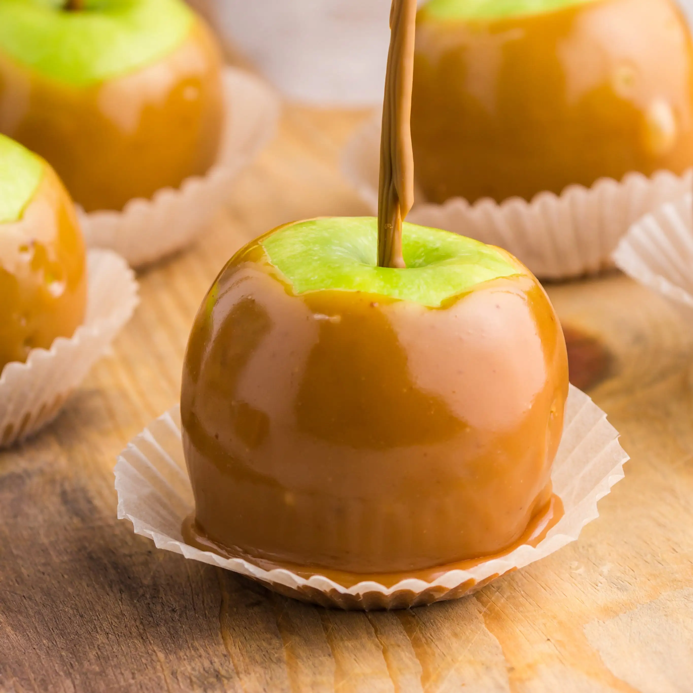

Caramel Apple

Description
How to make a caramel apple
Ingredients
- green apple
- wooden stick
- hot drizzly caramel in all its glory
- cooking paper
Steps
- Shove a small wooden stick into the core of
an apple, making sure that enough stick is
still outside of the apple so as to serve as a
handle.
- Holding the stick, smoother the apple in the hot
caramel until the apple is completely and
thoroughly covered, then place the apple stick-up
on a small piece of cooking paper.
- Let the caramel apple cool for about 10 minutes
before eating.